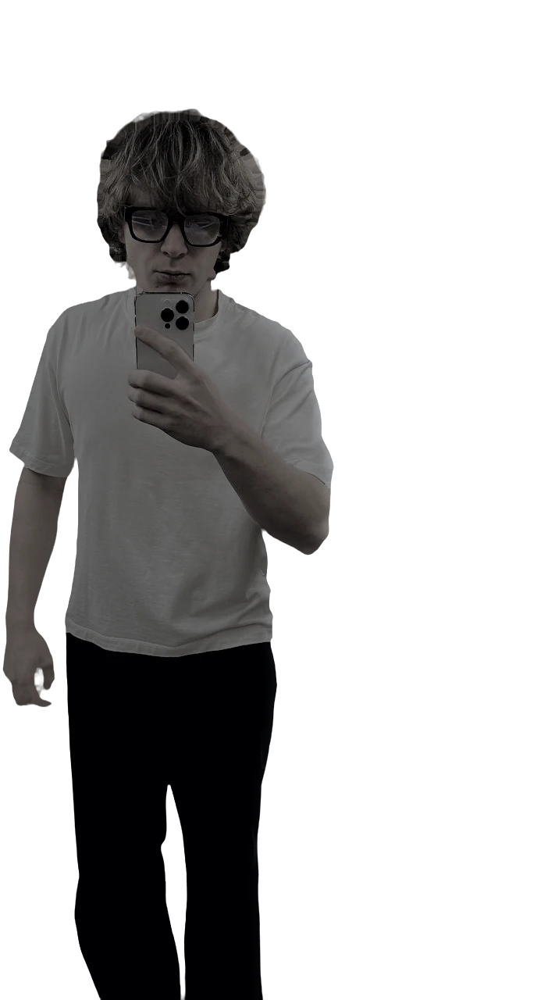

I cut video
and make it with AI

Hi, I am Danylo. I edit short-form video — Instagram Reels and TikTok — and I build video that was never filmed: the script and the prompts in Claude Code, the picture in Higgsfield, then cut and finished by hand.
Danylo
My name is Danylo Korobko. I am from Ukraine and I live in Prague, where I am in my final year of an IT degree. I work remotely, with clients in any country.
A year of freelance behind me, most of it short-form: I cut vertical video for Instagram Reels and TikTok — the hook in the first seconds, cuts on the beat, captions you can actually read on a phone, sound that does not fight the voice.
I went into this because I believe the future belongs to AI, and working with it is genuinely interesting. So half of what I do now is video that was never filmed: in Claude Code I write the script, the shot list and the prompts, in Higgsfield I generate the images and the motion, and then I edit the result like ordinary footage — pacing, sound, titles, grade.
I run a project on my own, from the first message to the finished file, so you talk to one person instead of a department — and you get the cut back while it is still worth posting.
Two kinds of job. Editing — raw footage in, a vertical cut out, ready for Reels or TikTok. AI-generated — nothing was filmed at all: the script and the prompts are written in Claude Code, the picture comes out of Higgsfield, and the edit is still done by hand. Pick a tab, then open a card to watch it.
Tell me what you are posting and where — I will say how I would cut it, how long it takes and what it costs. Raw footage, a rough idea, or nothing but a product all work as a starting point.